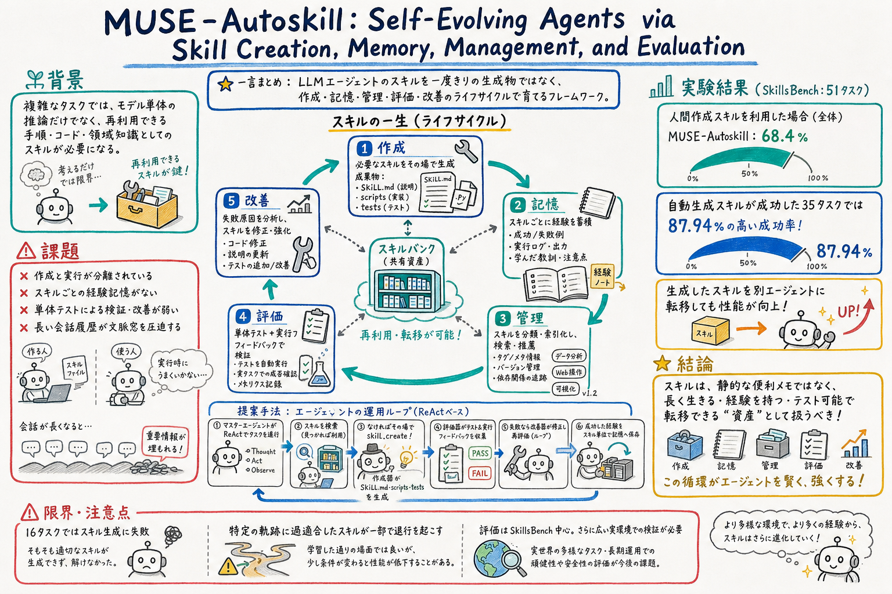

作成、記憶、管理、評価、改善を、実用的な skill-centric agent system の必須段階として整理する。

どんな論文か
MUSE-Autoskill の中心的な発想は、agent skill を「便利な手順書」ではなく、作成され、記憶を持ち、管理され、テストされ、失敗から改善される長寿命の資産として扱うことにある。モデル重みを更新するのではなく、モデルの外側にあるスキルバンクと運用ループを育てる。
問題意識はかなり実務寄りである。既存の自動スキル生成は、作成と利用が分離しやすく、スキルごとの経験が残らず、単体テストや実行時フィードバックで継続改善されにくい。結果として、スキルは増えても、再利用性や信頼性が伸びにくい。
MUSE-Autoskill はこの問題を、スキルのライフサイクルとして定式化する。エージェントは ReAct ループの中で、既存スキルを探し、足りなければ `skill_create` で新しいスキルを作り、`SKILL.md`、scripts、tests、resources を含むパッケージとして保存する。登録前にはテストを走らせ、失敗すれば修正する。
面白いのは、スキル単位の記憶を持つ点である。全体の長期記憶とは別に、各スキルが過去の注意点、失敗モード、入力形式の癖、性能上の caveat を持つ。これにより、スキル本体を肥大化させすぎず、経験だけを横に育てられる。
LLM エージェントが使うスキルを、作って終わりの静的 artifact ではなく、creation、memory、management、evaluation、refinement の lifecycle で扱う論文である。
MUSE-Autoskill は、スキルをオンデマンドで作成し、タスクをまたいで保存・再利用し、単体テストと実行フィードバックで改善する。さらに、各スキルに紐づく経験を蓄積する skill-level memory を導入する。
評価では SkillsBench の 51 タスクを使い、GPT-5.5 を背骨にした MUSE-Autoskill、Codex、Hermes を比較している。モデル能力ではなく、エージェントシステム設計とスキル運用の差を見る構成である。
課題と貢献
`skill_create` をランタイムの中から呼び出し、実行時文脈に合ったスキルパッケージを作成する。
各スキルに `.memory.md` を紐づけ、既知の失敗モードや入力形式の癖を後続タスクで使えるようにする。
生成されたスキルは `tests/` を通過した時だけスキルバンクに登録され、失敗した場合は修正ループに入る。
MUSE が作ったスキルを別エージェントの Hermes に入れても性能が上がることを確認している。
手法のしくみ
1
エージェントは ReAct ループで、計画、行動、観察を繰り返す。
2
既存スキルで足りる場合は、スキルカタログから該当スキルを選び、`SKILL.md` を読んで実行する。
3
足りない場合は `skill_create` が、目的、入力、期待出力から `SKILL.md`、scripts、resources、tests を含むスキルパッケージを作る。
4
評価器がスキルの単体テストを sandbox 内で実行し、通った場合だけスキルバンクへ登録する。
5
失敗した場合は、エラー情報をもとに更新器がスキルを修正し、再びテストする。
6
スキル利用時の観察、失敗、入力形式の癖などは、そのスキルに紐づく記憶へ追記される。
7
長いタスクでは、会話履歴を DAG として保持しつつ、アクティブ文脈だけを段階的に圧縮する。
検証結果
人間が作ったスキルを入れると、MUSE-Autoskill、Codex、Hermes のすべてで成功率が 13〜15 ポイント程度改善した。
MUSE-Autoskill は人間スキルありで 68.40% に到達し、三つのエージェントの中で最も高い全体スコアだった。
MUSE-Autoskill が成功軌跡からスキルを生成できた 35 タスクでは、生成スキル利用時に 87.94% に到達し、人間スキル利用時を上回った。
生成スキルを Hermes にそのまま注入しても +10.51pp の改善があり、スキルが特定ランタイムだけの振る舞いではなく、外部化された知識資産として働く可能性を示した。
さらに、特定 run の前提に寄りすぎて退行するスキルもあった。
限界と読みどころ
評価は SkillsBench の 51 タスクに限られる。94 タスク全体ではなく、除外タスクにはより複雑な Docker 環境が含まれる可能性がある。
生成スキルは単一の成功軌跡から作られるため、その run に固有の前提やノイズへ過適合する可能性がある。
別エージェントへの転移は MUSE-Autoskill から Hermes 方向で確認されているが、より多くの agent runtime での一般性は未確認である。
スキル単位の記憶を共有するか、個人・環境ごとに分けるかは運用上の設計論点である。論文でもスキル本体と経験記憶は分けられている。
読みながら見る図表や節
- Figure 1 は、三つの GPT-5.5-backed agents を SkillsBench の領域別 accuracy で比較する。MUSE-Autoskill は全体で 68.4% と最も高い。
- Figure 2 は、スキル作成、記憶、管理、評価、改善が一つのライフサイクルとして回る構造を示す。ここがこの論文の中心図である。
- agent flow の図は、retrieve-or-create、evaluate、refine、memory append の運用ループを見るために重要である。
- skill anatomy の分析では、MUSE 生成スキルが人間スキルより長く、手順、失敗モード、検証方法を細かく書く傾向が示される。
- cost / latency 図では、スキルがトークンを増やす一方で、探索や試行錯誤を減らし、遅延や turn 数を下げる場合があることが示される。
次に読むなら
- SkillOpt とセットで読む。SkillOpt はスキル文書をどう最適化するか、MUSE-Autoskill はスキルバンクをどう運用するかを扱う。
- From Raw Experience to Skill Consumption を読むと、生成スキルがいつ効き、いつ負の転移を起こすかの見取り図が作れる。
- Dynamic Skill Lifecycle Management を読むと、retain / retire / expand のようなスキル退役・拡張管理へ進める。
- Counterfactual Trace Auditing を読むと、スキルが成功率以外に agent trajectory をどう変えるかを監査する視点が得られる。
- おい丸運用へ引き込むなら、`learn-from-logs` の出力を、全体 MEMORY、特定 skill の経験記憶、テスト、退役候補に分ける設計を試したい。
読後Q&A
この論文の中心問いは？
エージェントのスキルを、作って終わりの文書ではなく、作成・記憶・管理・評価・改善を通じて育つ資産として扱えるか、という問いである。
SkillOpt と何が違う？
SkillOpt はスキル文書をどう編集して性能を上げるかに焦点がある。MUSE-Autoskill は、スキルをどう作り、保存し、選び、テストし、改善し、別エージェントへ移すかという運用基盤に焦点がある。
スキル単位の記憶は何が嬉しい？
全体の長期記憶だけだと、その学びがどのスキルに効くのかが埋もれやすい。スキル単位の記憶にすると、そのスキルを使う時だけ過去の注意点や失敗モードを読める。
自動生成スキルが人間スキルを上回った理由は？
論文の分析では、MUSE 生成スキルは人間スキルより長く、入力出力形式、失敗モード、検証方法、手順をより細かく書く傾向がある。その詳細さが、毎回の試行錯誤を減らす手順として効いた可能性がある。
どこが危ない？
単一の成功軌跡から作ったスキルは、その時だけ効いた前提を含むことがある。論文でも hvac-control のように、元 run に寄りすぎた手順が別 run で退行する例がある。
おい丸の運用にどう効く？
`SKILL.md` を直接太らせるのではなく、スキルごとの経験記憶、テスト、失敗ログ、採用・退役ルールを分けて持つ設計に繋がる。learn-from-logs の出力も、全体ルールと特定スキルの経験に分けるとよさそう。
実務で読むならどこから？
まず Figure 2 のライフサイクル図、次に skill-level memory、create-evaluate-register loop、generated skill transfer の実験を見るのがよい。
次に何を読むべき？
SkillOpt と From Raw Experience to Skill Consumption が自然な次読候補である。前者は最適化、後者は生成スキルの有効性と負の転移を見る地図になる。